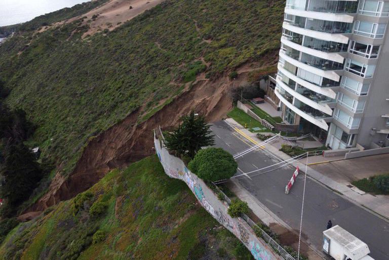
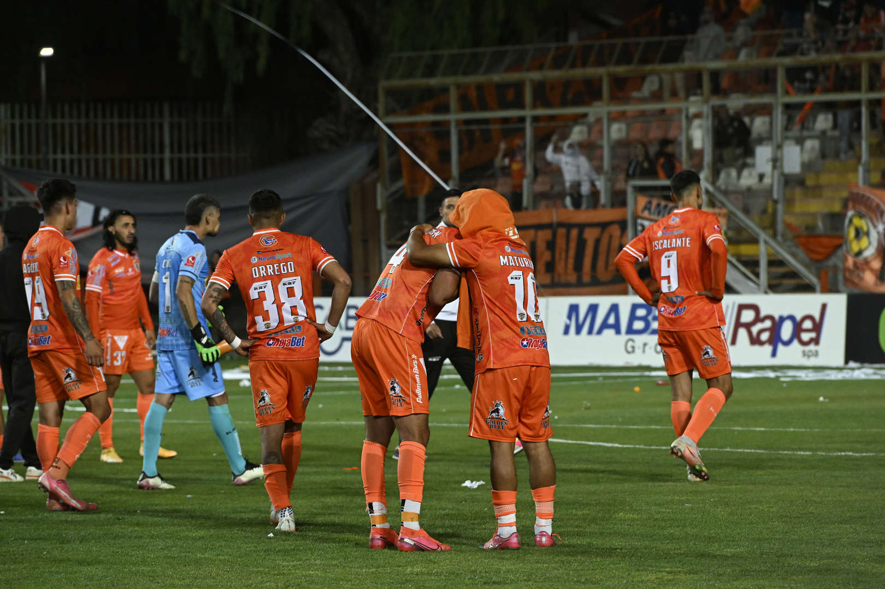
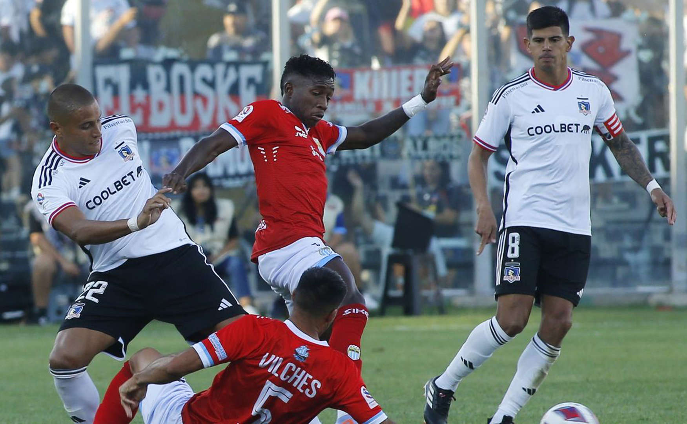

Sección de Noticias
Noticias Generales |
|---|
Rusia confirma la muerte de Yevgeny Prigozhin, jefe del grupo Wagner, a dos meses de desafiar a Putin |
| La Agencia Federal de Transporte Aéreo de Rusia confirmó hoy la muerte del jefe del grupo de mercenarios Wagner, Yevgeny Prigozhin, tras estrellarse su avión en Rusia. Además se dio a conocer que los 10 pasajeros que iban a bordo han muerto, según el Ministerio de Emergencias. Pese a esto, de momento solo se han podido rescatar 8 cuerpos del total de los tripulantes fallecidos. Desde el entorno de Wagner se confirmó además que en el aparato viajaban tanto su jefe como uno de sus comandantes más importantes, el ultraderechista Dmitri Utkin. Lee también...: El ascenso y caída de Prigozhin, el hombre que desafió a Putin e intentó un levantamiento en Rusia Se trata de un antiguo agente del servicio de inteligencia del ejército y que participó en la incursión rusa en la región ucrania de Donbás tras la anexión ilegal de Crimea en 2014. “Se ha iniciado una investigación sobre la catástrofe del avión Embraer que ha ocurrido esta noche en la región de Tver. Según la lista de pasajeros, entre ellos figuran el nombre y el apellido de Yevgueni Prigozhin”, confirmó la Agencia Federal de Transporte Aéreo de Rusia. |
 |
Edificio Kandinsky, la torre de exclusivos departamentos que podría derrumbarse tras las lluvias |
| El Ministerio de Obras Públicas investiga las causas del enorme socavón ocurrido anoche en la avenida Borgoño, en el límite entre las comunas de Concón y Viña del Mar, en la Región de Valparaíso, y que mantiene cortada la vía ubicada en pleno borde costero, en medio del sistema frontal que afecta a la zona centro sur. La emergencia partió como un deslizamiento de tierra en una calle que llega hasta el acceso del Edificio Kandinsky, que está construido sobre dunas, y del que fueron evacuadas 25 personas de 11 departamentos. Después, devino en la socavación de la duna y luego de la calzada. Preliminarmente, se presume que el suceso fue originado por el colapso de un colector de aguas, que además ya había fallado el 10 de agosto y el último fin de semana. "Ya no solo es un riesgo, sino que se ha socavado completamente la vía inferior, y además socavó la vía que da acceso hacia el edificio (...) esto ha ido avanzando durante las horas y, además, la carga hídrica no ha parado, así que estamos monitoreando", comentó la alcaldesa de Viña del Mar, Macarena Ripamonti. Sobre las presuntas causas del deslizamiento que derivó en el socavón, planteó que puede haber dos posibilidades: la primera, que la obra del colector "el año 2005 se haya diseñado de manera inadecuada, por lo tanto, la infraestructura hidráulica ha colapsado". "O bien, existe la posibilidad de que ésta se haya sobrecargado por los aumentos de los ramales el año 2017, y existe un informe técnico de la Dirección de Obras Hidráulicas que no es favorable a esa ampliación de los ramales", apuntó. El seremi de Obras Públicas, Yanino Riquelme, anunció que van a investigar lo sucedido para "recabar la información respecto a cuáles fueron las indicaciones y por qué se tomó finalmente la medida de sumarle mayor carga a este colector". Además, el MOP ya trabaja en el proceso de licitación para reparar la vía dañada. |
|  |
Ministra Vallejo: "Quienes justifican el golpe de Estado podrían darlo hoy" |
| Un día después de que la Cámara aprobara leer la controvertida declaración de 1973 en contra del expresidente Salvador Allende, la ministra vocera de Gobierno, Camila Vallejo, dijo este miércoles que "nunca se puede avalar o buscar argumentos que legitimen la ruptura democrática por más diferencias políticas que se puedan tener" y enfatizó que "quienes justifican el golpe de Estado podrían darlo hoy". Vallejo calificó de "retroceso civilizatorio" que se instalen en el debate público argumentos "que aluden a que hubo ciertas razones que llevaron a un golpe". La vocera, que ofreció sus declaraciones tras finalizar una visita a San José de Maipo, apuntó a un intento de "reescribir la historia" y llamó a todas las fuerzas políticas a "cuidar y proteger la democracia". Los dichos de la ministra llegan después de que ayer, en la Cámara de Diputados, se leyera una resolución parlamentaria, a petición de la oposición, suscrita hace 50 años que entonces declaró "inconstitucional" el Gobierno democrático de Allende. Aquel texto fue usado durante muchos años como "sustento jurídico" para justificar el golpe militar del 11 de septiembre de 1973, que dio inicio a una cruenta dictadura encabezada por el general Augusto Pinochet (1973-1990), que dejó más de 3.000 opositores ejecutados. La lectura en la sala del Congreso elevó la tensión entre los parlamentarios y varias diputadas de izquierda abandonaron el hemiciclo acusando de "negacionistas" a los partidos de oposición, que promovieron la iniciativa. |
Sección de Deportes
Noticia de Deportes |
|---|
La denuncia que sacude al fútbol chileno suma un nuevo capítulo: esto hará la ANFP |
| La grave denuncia en relación a un supuesto arreglo de la final del Ascenso 2022 entre Copiapó y Cobreloa desató un nuevo escándalo en el fútbol chileno. ¿La razón? David Escalante, delantero del cuadro loíno, lanzó potentes acusaciones y contó detalles desconocidos de ese plantel que no pudo ascender. “Teníamos muchos compañeros que estaban perdidos en las apuestas. La duda está, pero no hay pruebas. No nos pueden echar la culpa a todos tampoco, si no tienen prueba, tienen que salir a decir con nombre y apellido. Y si tienen prueba, hay que mandarlos a la cana, como tiene que ser”, señaló este martes a DSports. Las declaraciones de Escalante generaron revuelo en la ANFP. Este miércoles, y luego del término de una nueva reunión de directorio del organismo, la institución decidió llevar los antecedentes y generar una denuncia en la Fiscalía para que investigue penalmente. Los dirigentes consideran que, en caso de que las denuncian sean ciertas, son demasiado graves. Hasta ahora, eso sí, se desconoce cuánto tiempo tomará la investigación para comprobar si es que realmente hay futbolistas vinculados a las apuestas. |
|  |
Los cruces para las semifinales nacionales de la Copa Chile 2023 |
| La Copa Chile 2023 ya definió a sus cuatro campeones regionales y cerró los enfrentamientos que tendrán lugar en las semifinales nacionales del certamen. Cobreloa conquistó la Zona Norte ante Cobresal y Colo Colo hizo lo propio en el territorio Centro Norte contra Universidad Católica. Magallanes se impuso por penales a O'Higgins en la definición Centro Sur y Universidad de Concepción tumbó a Temuco en el Sur. Las series se separarán en mitades geográficas, por lo que los curces serán entre los ganadores Norte y Centro Norte; y Centro Sur contra Sur. Los partidos aún no son programados. Revisa las llaves semifinales de la Copa Chile 2023: Cobreloa vs. Colo Colo Magallanes vs. Universidad de Concepción |
¡Suspendido! Colo Colo y Magallanes no se juega este fin de semana |
| En Estados Unidos la tasa de interés aplicada a los préstamos hipotecarios a tipo fijo y un plazo de 30 años se ha situado la última semana en el 7,31%, su nivel más alto desde diciembre del año 2000, mientras que la demanda de hipotecas para la adquisición de viviendas se hundía a mínimos desde abril de 1995, según los datos de la Asociación de Banqueros Hipotecarios (MBA). |
|  |
Sección de Negocios
Noticia de Negocios |
|---|
IPSA logra ganancias por segundo día consecutivo en línea con la tendencia global |
| Las bolsas globales repuntaron en una jornada marcada por datos de relevancia en EEUU y Europa, y a la espera del discurso de Jerome Powell y Christine Lagarde en el simposio de Jackson Hole. El IPSA subió un 0,49% a 6.189,20 puntos. “En EE.UU. se acaba de publicar los PMIs preliminares de agosto: PMI Compuesto 50,4 (vs 52,0e y anterior), PMI Manufacturero 47,0 (vs 49,3e y 49,0 anterior) y PMI de Servicios 51,0 (vs 52,3e y anterior). Todos los PMI por debajo de lo esperado lo que da cuenta de la desaceleración de la economía norteamericana, lo que aumenta las probabilidades que la FED no suba la tasa en la próxima reunión del 20 de septiembre”, dijo Guillermo Araya de Renta 4. José Agustín Cristi de Zurich AGF puntualizó que “este buen rendimiento se debe a que el mercado espera que Jerome Powell en su discurso de mañana entregue señales de moderación sobre la trayectoria de las tasas de interés. Otro factor que ha gatillado este rendimiento son las altas expectativas en el reporte de resultados de las compañías ligadas a la inteligencia artificial”. |
Dólar cierra con fuerte caída ante precio del cobre y previo a discurso de Powell |
| El dólar cerró con fuertes retrocesos en una sesión en que volvió a repuntar el cobre, y donde los mercados están muy atentos a lo que ocurrirá desde este jueves en el simposio de Jackson Hole. La divisa estadounidense cerró en $856,15 lo que implica una baja de $13,35 con respecto al martes. “Mañana comenzará el Simposio de Jackson Hole, que reúne a los líderes mundiales en el ámbito económico y monetario, donde el mayor foco de atención estará el viernes con los comentarios de Jerome Powell, presidente de la Reserva Federal de EEUU, que podrían generar volatilidad cambiaria”, dijo Ricardo Bustamante de Capitaria. |
Las tasas de los créditos hipotecarios en EEUU escalaron a máximos de los últimos 23 años |
| En Estados Unidos la tasa de interés aplicada a los préstamos hipotecarios a tipo fijo y un plazo de 30 años se ha situado la última semana en el 7,31%, su nivel más alto desde diciembre del año 2000, mientras que la demanda de hipotecas para la adquisición de viviendas se hundía a mínimos desde abril de 1995, según los datos de la Asociación de Banqueros Hipotecarios (MBA). |